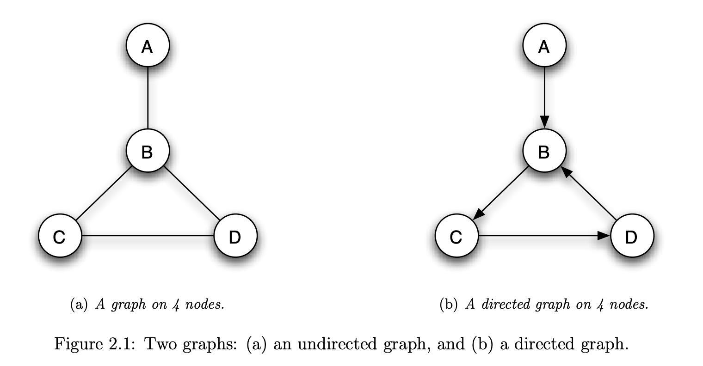
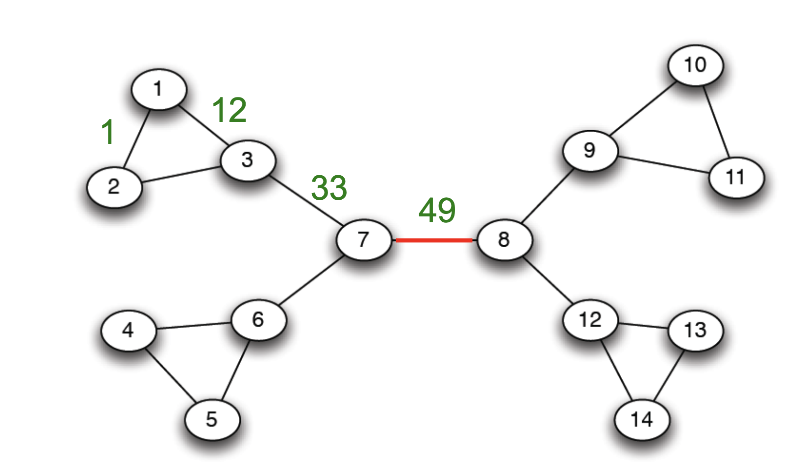
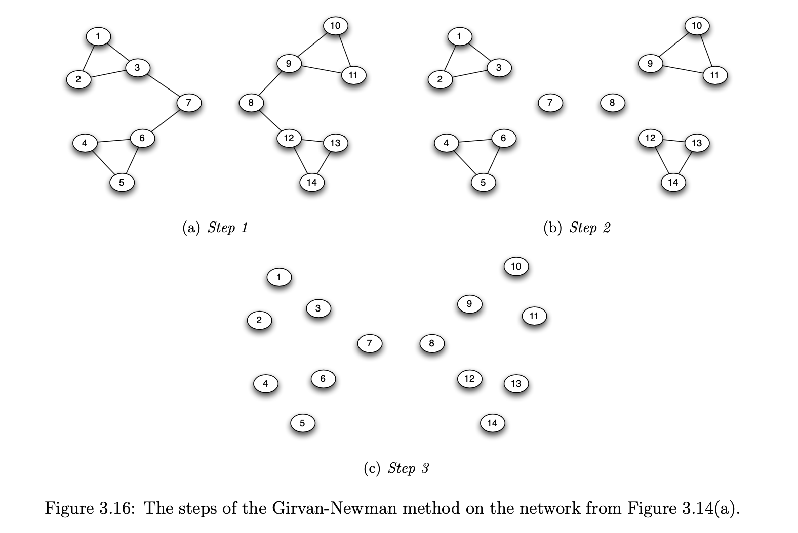
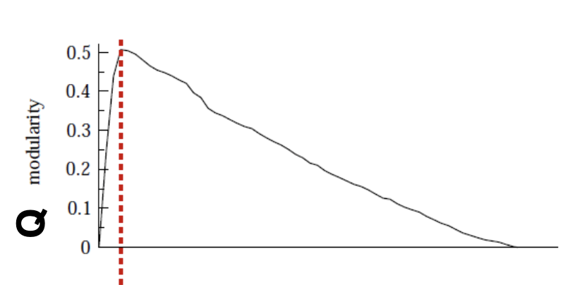
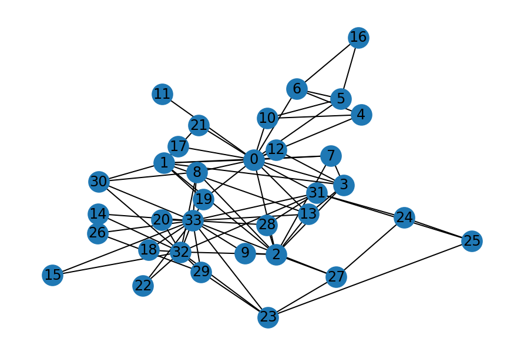
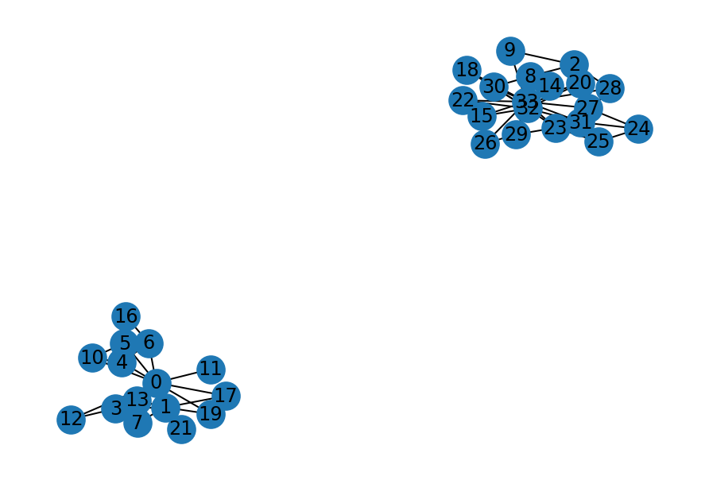
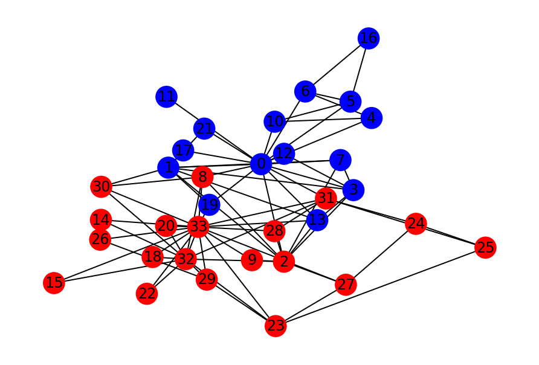
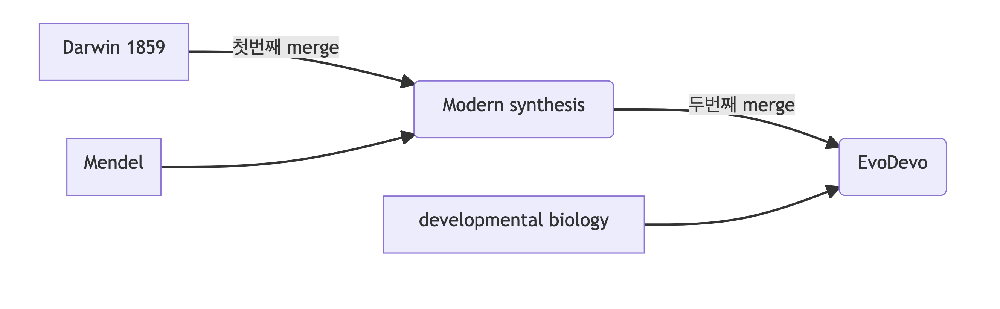
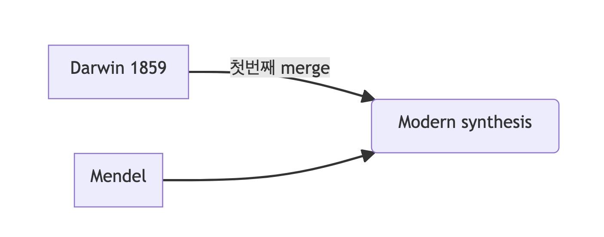
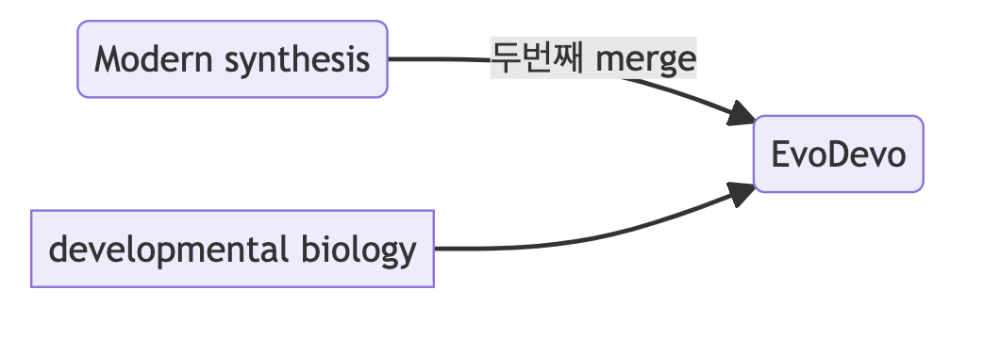

L3. 서비스의 발생과 구조 그리고 진화
자연계와 서비스에서의 모듈적 구조
Minseop Lee(Programs in Cognitive Science, SNU)
2022-09-20(Tue)
강의 목표
- 진화에 유용한 모듈구조에 대해 이해한다.
- 서비스를 모듈적 구조로 만들기 위한 역사와 유용성에 대해 이해한다.

지난 강의 정리
- 성공적인 서비스를 찾고/만들기 위해서는 적절한 exploitation/exploration을 찾아야한다.
- 서비스가 성공하기 위해서는 어느정도 인간의 사회적/인지적 자원을 활용해야 하며 인간에게 부정적인 영향을 줄 수도 있음을 파악하였음.
J2. 경험을 해체한다는 것의 의미
- 서비스의 경험을 pre, during, post 로 분해
- 각각의 경험을 또 더 작은 경험소로 분해
경험을 해체해야 하는 이유
- 해당 경험에 매칭되는 서비스의 부분 부분을 나누어 기획하고, 만들고, 테스트 하기 위함.
- 각각의 경험이 총체적인 사용자 경험에 어떤 영향을 얼만큼 주는지 확인해야함.
- 서로가 독립적인 영향을 주는 구조체임을 이해해야함.(사용자의 머리속에 경험방이 따로따로 있다고 생각해보자)
↳ 모듈성에 대한 이해 필요
강의 순서
- 모듈성 개념과 자연계에서 모듈성
- 인공물과 서비스에서 모듈성
모듈(module)에 대한 각자의 생각
모듈들
- module in programming language
- batttery module
- module in curriculum
- …
전체를 이루는 구성요소, 부품 등
모듈(좀 더 자세히)
- 본체(本體)에서 분리되어,
- 작은 부분으로 유기적으로(기능별로) 구성되어 있다가,
- 필요할 때 마다, 본체에 합류하여 그 기능을 수행할 수 있는 것
- 통상, 그 자체로 하나의 완전한 기능을 수행할 수 있는 독립된 실체로 봄
- 각기 다른 여러 모듈 단위로 조립하여 전체를 완성 (모듈 조립)
- 표준화된 부품 (조립식 부품)
참고자료 : [Link]
모듈의 특성
- Unity (한가지 일만 수행)
- Smallness (간단명료)
- Simplicity (단순성)
- Independency (독립성) 등
모듈의 장점
- 수정 용이
- 재사용성 용이
- 유지관리 쉬움
모듈성(modularity)이란?

네트워크 분석의 기초
- Node(Vertices), Edge(Link)
- Graph \(\displaystyle G = (V,E)\)
- directed, undirected

모듈의 특징
- 밖으로는 적게
- 안으로는 많은
- 연결이 있는
- 노드들의 집합
모듈성의 수학적 정의
- 모듈성(modularity)
\[{\displaystyle Q={\frac {1}{(2m)}}\sum _{vw}\left[A_{vw}-{\frac {k_{v}k_{w}}{(2m)}}\right]\delta (c_{v},c_{w})}\]
\(m\) : 전체 네트워크의 엣지수, \(A_{vw}\) : 임의의 노드 \(v\)와 \(w\)를 연결하는 엣지의 유무(1혹은 0), \(k_{v,w}\): 임의의 노드 \(v\)와 \(w\)의 연결성(degree), \(\delta (c_{v},c_{w})\) : 임의의 노드 \(v\)와 \(w\)의 가중치
- 보다 간단하게 👇
\[{\displaystyle Q = {Tr(E)} - {\left\lVert{E}\right\rVert}^2 }\]
네트워크 중심성(Centrality)
- Degree Centrality
- 연결된 노드가 많을수록
- Closeness Centrality
- 모든 노드까지의 거리가 가까울수록 높음
- 다른 모든 노드와의 거리의 합이 작을수록 높음
- Betweenness Centrality
- 모든 두 쌍의 노드 간에 _최단 거리_를 구하고 어느 노드를 지나는 경로가 전체의 몇 %인가?
- Eigenvector Centrality
- 큰 네트워크에 연결되어 있는 큰 사람일수록
- 구글의 PageRank와 유사
Betweenness centrality
\[g(v)=\sum _{{s\neq v\neq t}}{\frac {\sigma _{{st}}(v)}{\sigma _{{st}}}}\]
- \({\displaystyle \sigma _{st}}\) is the total number of shortest paths from node \({\displaystyle s}\) to node \({\displaystyle t}\)
- \({\displaystyle \sigma _{st}(v)}\) is the number of those paths that pass through \({\displaystyle v}\) (not where \({\displaystyle v}\) is an end point)
Community Detection and Girvan-Newman algorithm
- community 탐지에는 다양한 알고리즘이 존재
- 그 중 하나인 Girvan-Newman 알고리즘은 중심성 개념을 활용함.

Girvan-Newman algorithm
- 엣지가 남지 않을때까지 아래의 과정을 반복
- 모든 edge의 betweenness 를 계산
- betweenness 가 가장 높은 edge를 제거
- 이어져 있는 노드들의 집합을 community라고 함.
Girvan-Newman algorithm
Girvan-Newman algorithm - stopping point
Question: Girvan-Newman algorithm 을 언제 stop해야 하는가?
Answer : 모듈성의 크기가 가장 큰 community 의 개수가 최적!

community detection 구현
구현코드 : [Link]
community detection 구현
구현코드 : [Link]
community detection 구현
구현코드 : [Link]
자연계에서는 모듈 구조를 어떻게 활용하는가?
- 진화발생생물학(이보디보)
- 진화심리학
자연계에서는 모듈 구조를 어떻게 활용하는가?
- 이보디보와 모듈성에 대해 다루기 전에 진화생물학의 발전과정을 살펴봅시다.
진화생물학에서의 Merge 과정
첫번째 merge : 진화생물학의 근대적 종합
- 다윈이 제시한 자연선택에 의한 진화의 조건 중에서 대물림의 메커니즘이 물음표로 남아 있었음.
- 이러한 상황에서 멘델로부터 시작된 유전학이 대물림 메커니즘을 잘 설명
- 자연선택에 의한 진화론과 멘델의 전통에서 시작된 유전학(집단유전학)이 학문적으로 결합됨.

첫번째 merge
- 개체군 내의 유전자의 빈도변화를 수학적으로 다루는 전통
- 모듈성 개념이 적용되지 않았음.
- 생물계의 혁신을 설명하는 것이 주된 목표가 아니었음.
두번째 merge : 진화발생생물학
- 다윈의 진화이론과 집단 유전학이 종합되었지만 유전자가 개체가 발생하는 과정을 다루는 발생생물학과는 독립적으로 발전했음.
- 1970년대 후반, 동물의 체절의 발생을 관장하는 유전자인 호메오박스 유전자가 곤충 및 포유류에서 동일한 역할을 한다는 것이 밝혀지면서 진화와 발생이 밀접하게 연결되어 있음을 알게 됨.
- 이후 진화발생생물학이라는 분야가 시작됨.
%%| fig-width: 5
flowchart LR;
2(Modern synthesis)-- 두번째 merge -->4(EvoDevo)
5[developmental biology]-->4
호메오 박스 유전자의 구조

모듈성을 통해 혁신을 설명
- 이보디보(Evolutionary Developmental Biology)는 발생과정이 어떻게 진화했는지에 대해 초점을 맞추는 학문
- 체절과 체절의 발생을 담당하는 유전자의 구조는 그 구조 자체의 모듈성에 의해 진화했음.
- 자연의 레고블럭을 통해, 만들어진 수많은 실험결과, 캄브리아기 대폭발
진화심리학의 탄생
- 진화론의 현대적 종합과 인지심리학의 계산주의 마음이론이 결합하여 진화심리학 탄생
진화심리학에서 마음의 구조를 설명하는 법
- 마음은 정신기관(mental organ)
- 대량모듈성 논제

진화심리학에서 마음의 구조를 설명하는 법
- 수렵채집기 진화적 적응환경(environment of evolutionary adaptedness)에서 풀어야 했던 문제들
- 진화적 적응환경은 마치 기능요구서와 같이 독립된 기능이 진화하도록 이끔
- 아무런 프로그램이 깔려 있지 않은 컴퓨터와 각종 프로그램이 깔려 있는 컴퓨터의 비교

마음의 모듈성
- 마음의 측면에서 안정성(보편성)과 함께 다양성(특수성)을 확보할 수 있음.
- 예시, 사기꾼 탐지 모듈, 표정으로부터 사회적 정보 추출 등
- 인간의 뇌와 마음은 다양한 모듈이 협업하는 공간
정리
- 체절이나 마음과 같은 복잡한 구조는 모듈 구조로 되어 있을때 효율적이다.
- 그렇기 때문에 자연은 그러한 구조를 진화시켰음.
- 모듈구조는 바로 만들어지지 않고 모듈을 이루는 유전자, 뇌의 하부구조 등이 갖추어져 있을때 비로소 점진적으로 진화할 수 있음.
강의 순서
- 모듈성 개념과 자연계에서 모듈성
2. 인공물과 서비스에서 모듈성
프로그래밍 언어의 발전
- 기계 프로그래밍 -> 절차 지향형 프로그래밍 -> 객체 지향형 프로그래밍
- 모듈성↓ —————————————> 모듈성 ↑
- 하드웨어가 발전하고 프로그램이 복잡해지면서 프로그래밍 언어도 점차 모듈 구조를 지원하는 방식으로 발전
모듈적 프로그래밍의 장점
- 수정과 재사용성을 높여 빠르게 프로그램을 만들어 낼 수 있음
- 이해하기 쉬운코드로 협업하기 용이한 구조
Web의 진화
- 1세대 웹 - 전통적인 Web System Architecture. 정적 웹.
- 2세대 웹 - User Interaction 의 증가. 동적 웹(자바스크립트)
- 3세대 웹 - SPA(Single Page Application) - 구별되기 시작하는 Frontend와 Backend
- Modern WEB - 규모가 커지기 시작하는 Web System의 발전
프론트엔드 프레임워크 사례 - React.js

프론트엔드 프레임워크 사례 - React.js

웹서비스에서의 모듈성
- 프론트엔드 개발 기술이 점차 모듈적 구조로 이뤄지는 것과 함께 디자인 분야도 함께 모듈적 구조를 적극 활용하는 방식으로 발전이 이뤄짐

모듈적 경험을 통해 기획하는 법
- 공식이 존재하는 것은 아님
- 밖으로는 적게, 안으로는 많은 연결이 있는 노드들의 집합
- 밖으로는 적게, 안으로는 많은 연결이 있는 경험들의 집합
- 경험들의 집합 간의 위계를 설정하는 일
정리
- 진화의 역사에서 새로운 체절 구조는 나타나지 않고, 재조합을 통해 새로운 변이들만 나타남
- 서비스를 만드는 하부 구조도 표준이 될만큼 강력한 프레임워크가 나타나면 오래 지속될 가능성 높음.
- 다양한 서비스들이 양산되고 있는 지금이 바로 그러한 시점이 아닐지
- 모듈의 개념과 장점을 이해하면 어느때보다 빠르게 원하는 서비스를 구현할 수 있는 시기임.
- 현대 서비스 개발툴(개발, 디자인, 기획)은 모두 비슷한 모듈 개념을 차용한 것일 가능성이 높으며 시장에서 가장 우세한 툴을 쓰는 것도 좋은 전략
- 툴보다는 내가 가진 생각과 서비스에서 제공하고자 하는 경험을 모듈적 구조(세분화, 계층화)로 만드는 것이 훨씬 중요!
다음 시간에는…
- 서비스를 만드는 팀의 구조에 대해 알아볼 예정
UX와 서비스 기획